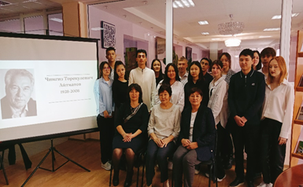
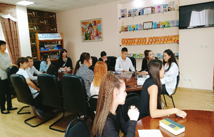
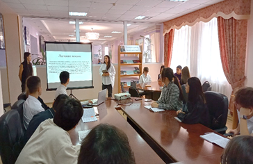
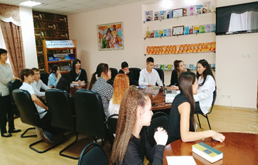
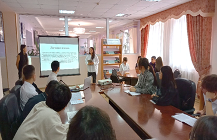

Читающий колледж
24 октября в библиотеке колледжа «Туран», в рамках проекта «Читающий колледж» было проведено мероприятие со студентами группы МР-1 «Содружество литератур» по творчеству Ч. Айтматова и М. Шаханова в форме круглого стола. Ребята подготовили сообщения по творчеству писателей, познакомили с произведениями писателей, говорили об актуальности произведений в наши дни, отвечали на вопросы викторины. В завершении мероприятия был проведен обзор по книгам представленной на книжной выставке «Литературное содружество».
24 қазан «Тұран» колледжінің кітапханасында «Оқуға құштар колледж» жобасы аясында МР-1 тобының студенттерімен Ш. Айтматов пен М. Шахановтың шығармашылықтары туралы «Әдебиеттер достастығы» атты дөңгелек үстел өткізілді. Студенттерді жазушылардың өмірімен таныстырып, олардың шығармаларының бүгінгі күнде өзектілігі туралы айтылды. Викториналық сұрақтарға жауап берді. Шара соңында «Әдебиеттер достастығы» атты кітап көрмесіне қойылған кітаптарға шолу жасалды.

 


